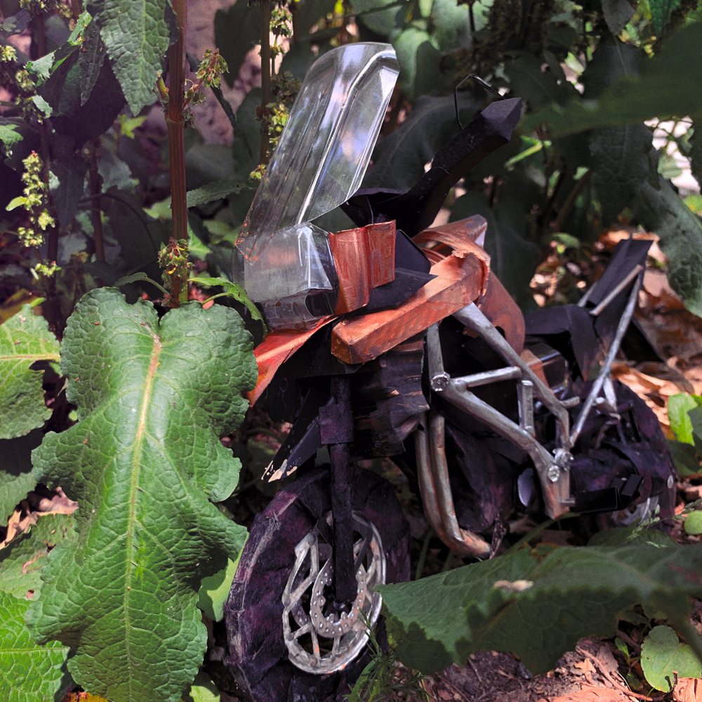

Rama Gustavsson

Genre: Indie Rock, Art Rock, Folk Rock
In the ballpark of: Conor Oberst, Luke Temple, Mitski, Arcade Fire, Frightened Rabbit

Rama Gustavsson is the recording project name of Brooklyn-based songwriter Anders Ram (Gustafson) Kapur. Born in New Jersey, Anders Kapur is the biracial child of an artist and a pragmatist, who taught him to never stop creating and never apologize for the results. Kapur’s indie rock songwriting, always acoustic guitar-based at its core, is heavily informed by his loves of American fingerpicking and structural adventurousness. His songs take unexpected detours as they journey along; always proceeding according to an internal logic, ebbing and flowing, telling stories, guiding you playfully to their conclusions.
Prior to his solo work, Kapur co-led dream pop group Selva and served as the live bassist for Brooklyn folk rock fixture Hunter & Wolfe. He is an alumnus of the Banff Centre for Arts and Creativity’s Audio Engineer Practicum in Alberta, Canada, where in his off-hours he recorded a debut solo album of original material, Bedlam-Roxbury. In 2017, he self-released figures, a minimalist electronic audio-visual album that was created entirely in Adobe After Effects between tasks at his day job as a video editor. In March 2019, Kapur returned to the Banff Centre for a three-week stint as a songwriter-in-residence. Optimist EP is Anders Kapur’s first release under the name Rama Gustavsson, and his first major release in two years. Deriving its title from Kapur’s middle name and his mother’s maiden name, Rama Gustavsson is a project that revels in the personal and aesthetic roots of the artist; an outlet for his desire to find joy in constraints, trust his voice, and create quickly without judgement. In keeping with these themes, Optimist was recorded over a long February weekend with a band convened only six weeks before. The EP’s four songs were composed by Kapur on a single guitar in his bedroom and were fully realized through the contributions of lead guitarist Emma Munger, drummer Theo Munger, and bassist Jeremy Yuto Nakamura. After the band workshopped the songs over a handful of rehearsal sessions in Brooklyn, the final recordings were captured by Shae Brossard at Hotel 2 Tango studio in Montreal. Warbling atop meandering guitars and the powerful, lyrical drumming of Theo Munger, Kapur sings about inadequacy, nihilism, centering, friendship, and motorcycles; his words alternately inscrutable and plainspoken. The EP features guest contributions from Glasgow singer Carla J. Easton (formerly of Teen Canteen), British Columbia’s Chantel Astarte (Lavachild), singer and Anders’ sister Sofie Kapur (Strange Loops), and cellist Charlotte Wang. Optimist EP is an authentic document that finds power in its imperfection and immediacy.
Optimist EP is Anders Kapur’s first release under the name Rama Gustavsson, and his first major release in two years. Deriving its title from Kapur’s middle name and his mother’s maiden name, Rama Gustavsson is a project that revels in the personal and aesthetic roots of the artist; an outlet for his desire to find joy in constraints, trust his voice, and create quickly without judgement. In keeping with these themes, Optimist was recorded over a long February weekend with a band convened only six weeks before. The EP’s four songs were composed by Kapur on a single guitar in his bedroom and were fully realized through the contributions of lead guitarist Emma Munger, drummer Theo Munger, and bassist Jeremy Yuto Nakamura. After the band workshopped the songs over a handful of rehearsal sessions in Brooklyn, the final recordings were captured by Shae Brossard at Hotel 2 Tango studio in Montreal. Warbling atop meandering guitars and the powerful, lyrical drumming of Theo Munger, Kapur sings about inadequacy, nihilism, centering, friendship, and motorcycles; his words alternately inscrutable and plainspoken. The EP features guest contributions from Glasgow singer Carla J. Easton (formerly of Teen Canteen), British Columbia’s Chantel Astarte (Lavachild), singer and Anders’ sister Sofie Kapur (Strange Loops), and cellist Charlotte Wang. Optimist EP is an authentic document that finds power in its imperfection and immediacy.
